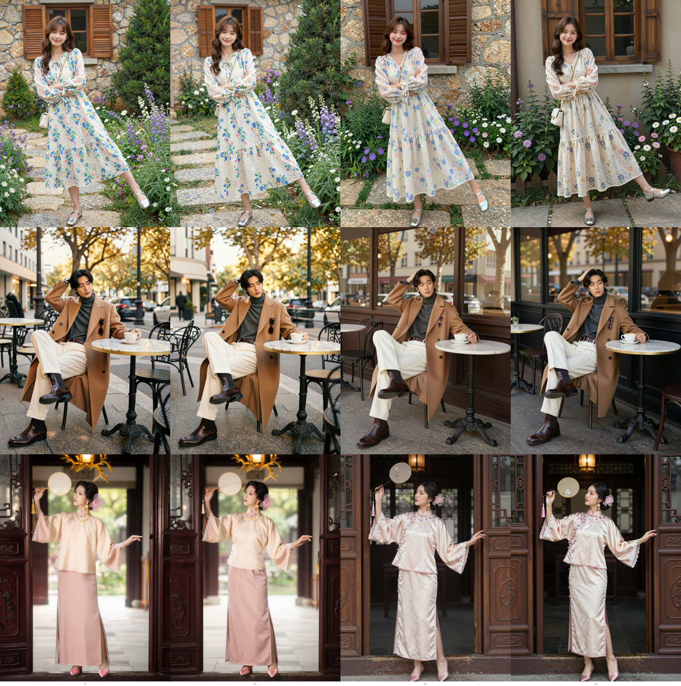
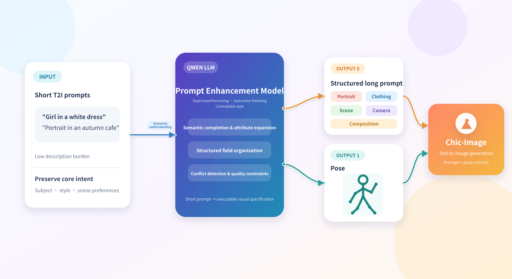
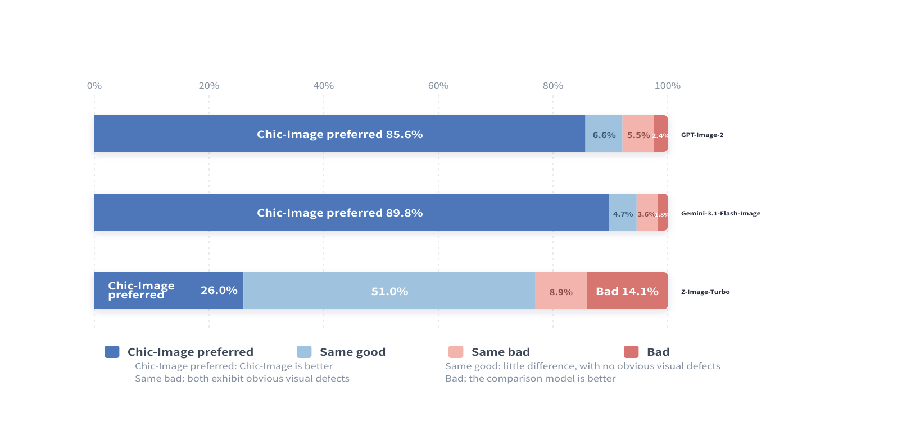

Chic-Image: A Generative Model for Clothing, Portraiture, and Social Media Aesthetics
Abstract
Although text-to-image (T2I) models are advancing rapidly, much of the field remains anchored to general benchmarks—text alignment, rendering, aesthetics, and broad scene coverage. Such evaluation improves average performance but often fails to address the demands of real-world business scenarios. In social media portrait and clothing display, publishability depends not merely on whether a person wearing a garment is generated, but on whether the model understands the appropriate person type, composition, pose, scene, camera language, and platform aesthetics for that garment. Many models produce "usable" images yet retain a noticeable AI look: monotonous composition, stiff poses, overly blurred backgrounds, unrealistic skin, and blurry clothing textures. More critically, they lack the logical coordination and aesthetic judgment that real social media content exhibits among person, clothing, and scene. These shortcomings are rarely captured by general scores but significantly affect suitability for platforms such as RedNote, Instagram, and e-commerce channels. Chic-Image is a text-to-image model designed to generate highly realistic, lifelike images. Rather than pursuing a general-purpose generator, it trains a vertical text-to-image model with clothing understanding, styling aesthetics, and social media aesthetic judgment, targeting the high-frequency scenario of clothing display combined with influencer portraits. The model aims not only to produce appealing portraits and clear clothing details, but also to understand the temperament, style, scene, and communicative context behind different clothing categories. For example, a suit should evoke sharp shoulder lines, upright or relaxed posture, and contexts such as commuting streets, hotel lobbies, office elevators, or urban nightscapes; a short skirt should involve coherent choices of waistline, leg proportion, footwear, top pairing, dynamic pose, and platform-specific styling. Accordingly, our core approach is to select a sufficiently malleable base model, fine-tune it via SFT on high-quality vertical data, and further steer the model distribution toward greater realism, lifelike quality, and aesthetic alignment with person–clothing–environment relationships through preference optimization and prompt enhancement.


Background
Chic-Image primarily targets content creators, e-commerce brands, fashion bloggers, and MCN agencies. These users share a need not simply to generate a high-scoring image, but to generate an image that resembles a real-world photograph suitable for direct posting on social media. In other words, the model does not generate abstract images, but rather content assets with a clear photographic context, fashion context, and platform aesthetic context. For these images, the appeal of an outfit depends not only on material and visual clarity, but also on whether the wearer's demeanor matches the outfit, whether the pose showcases the silhouette, whether the scene supports the outfit, whether the composition conforms to social media sharing habits, and whether the overall image resembles content that a real blogger would post. To achieve this goal, we seek a model with the following stable characteristics:
- In terms of fashion aesthetics, the model should understand "how a garment should be worn, photographed, and displayed," including whether the cut is reasonable, whether the styling works, whether the scene supports the look, and whether the image has the potential for social media sharing.
- Person–clothing–setting relationships are crucial. The model should understand the temperament, posture, shooting scene, camera language, and platform aesthetics associated with different outfits, rather than simply applying clothing as an isolated visual label to generic portraits.
- In terms of composition, the proportion occupied by the person should be more natural, rather than consistently filling 70% to 90% of the frame. Instead, environmental information such as mirrors, street scenes, coffee shops, and interior displays should be preserved.
- Poses should be more natural and dynamic, encompassing common social media actions such as walking, turning around, turning to the side, squatting, taking selfies, and holding a phone.
- For realism, the visual style should resemble real blogger selfies, street photography, store visit photos, fitting room photos, and OOTD content, rather than studio-style AI portraits.
- Skin should retain its natural texture, including pores, minor imperfections, and natural light and shadow, rather than a uniform, waxy, blurry finish.
- Clothing materials, cuts, pleats, and accessory details must be consistent and controllable, especially for high-frequency clothing categories such as knitwear, denim, leather, and lace.
Figures 1 and 2 demonstrate Chic-Image's generation effects in various compositions, dynamic poses, realistic and rich backgrounds, delicate skin textures, and clear clothing texture details. Compared with general-purpose text-to-image models, it substantially mitigates common problems such as AI-like characters, monotonous compositions, stiff poses, and excessively blurred backgrounds.
From a system design perspective, Chic-Image's main technical approach includes five parts:
- We propose StageFlow, which divides image generation into three stages. Stage 1 focuses on coarse-grained content and composition; Stage 2 focuses on optimizing the rendering of human figures and text; and Stage 3 focuses on image quality and sharpness, with resolution increasing from low to high, achieving a balance between inference speed and generation quality.
- We perform SFT fine-tuning on domain-specific data using z-image as the base image model to establish the default aesthetic for social media portraits and clothing displays.
- We introduce preference data and DPO/RLHF-style methods to further calibrate the AI feel, composition, skin, background, and clothing details.
- Prompt enhancement expands brief user requests into structured prompts.
- We establish an evaluation system oriented toward business objectives, rather than relying solely on general metrics such as CLIP Score and FID.
Core users and usage scenarios
Chic-Image serves four primary user groups: influencers and fashion bloggers, e-commerce apparel brands and boutiques, MCNs and social media operation teams, and content production teams that need to generate model photos, OOTD images, cover photos, and product recommendation images in batches. Although these users' workflows differ, their requirements for image style are highly consistent: images must resemble real social media content, not just "model capability showcase images." A typical input example is as follows: Generate a street style photo of a woman wearing a white cardigan and jeans, suitable for posting on Xiaohongshu (Little Red Book). This type of input is usually too short, lacking key information such as shooting angle, composition, scene semantics, clothing details, and the subject's actions. Therefore, prompt enhancement plays a crucial role in the system. After retrieval and template completion, the system expands the original input into a structured prompt that more closely resembles photographic language. For example: "A realistic smartphone photo of a young fashion influencer standing on a quiet city sidewalk, wearing a white knitted cardigan, high-waisted blue jeans, and minimal silver accessories. Full-body composition with the subject occupying about 45% of the frame, natural walking pose, one hand adjusting her hair, slightly tilted camera angle, visible street background with parked bicycles and cafe windows, soft afternoon natural light, realistic skin texture, subtle pores, no heavy retouching, detailed knit texture, denim seams and folds, casual social media OOTD style, shot on iPhone, 35mm equivalent lens, authentic lifestyle photography."

For this type of task, the model's output aims not only to produce a "clear portrait image," but also a content image that closely resembles a real social media photo. This seemingly subtle distinction means that the entire training system must revolve around aesthetic preferences, rather than solely focusing on general generative capabilities.
In clothing-generation scenarios, Chic-Image emphasizes the model's combined understanding of "clothing semantics + personality + scene context + social media aesthetics." A garment in a realistic content image does not exist in isolation; it naturally evokes the wearer's age, posture, makeup, accessories, shooting location, lighting, and composition. If the model only understands surface-level tags like "white coat," "short skirt," or "suit," the generated result will often be a correct but uninteresting clothing photo. Truly publishable content images need to convince viewers that the person would actually dress, stand, and be photographed in that way in that specific scene.
Taking suits as an example, models need to understand that suits are not simply a symbol of formal attire. A black, wide-shouldered suit is more suitable for urban streets, office elevators, hotel lobbies, street photography under flashing lights at night, or cool-toned glass curtain walls. The resulting image can convey a sharp, mature, and aloof character, with a generally more upright posture. Accessories could include pointed shoes, a handbag, metallic earrings, or sunglasses. A beige linen suit is more suitable for coffee shops, travel districts, balconies with natural light, or weekend commutes. The resulting image can convey a more relaxed character, with poses such as sitting at an outdoor table, holding a coffee, naturally turning their head, or walking while being photographed. Oversized suits can be combined with short skirts, long boots, and low-angle street photography to emphasize proportions and a sense of style; fitted suits rely more on clean backgrounds, sharp postures, and a restrained business atmosphere. Models need to simultaneously judge shoulder lines, drape, fabric thickness, formality, and styling logic, rather than simply generating a black jacket.
Mini skirts also require a more nuanced aesthetic understanding. Pleated mini skirts are more easily associated with preppy styles, sneakers, knitwear, shirts, bright outdoor settings, and light, free-flowing movements; denim mini skirts are suitable for summer street style, travel, music festivals, tank tops, cropped tops, and a more casual pose; bodycon mini skirts are better suited for urban nightscapes, restaurant and bar entrances, long boots, mature makeup and hairstyles, and a stronger expression of body curves; A-line mini skirts can be paired with daily commutes, coffee shops, shopping mall fitting rooms, and a touch of retro style. The focus of mini skirt photos is usually not on the "shortness" of the skirt itself, but on whether the waistline, leg proportions, shoes, top pairings, and dynamic poses all work together harmoniously. Models need to know which mini skirts suit which people, what camera distances, what environments, and what social media styles are appropriate.
Therefore, Chic-Image's understanding of clothing goes beyond just materials and textures; it also encompasses aesthetic appeal in both style and content. Whether clothing looks good depends on whether the person, clothing, and setting form a unified narrative: does the person's image match the clothing, does the clothing match the scene, does the scene support the shooting intent, and does the composition conform to the visual habits of platforms like Xiaohongshu, Instagram, TikTok, or e-commerce product recommendation images? Ultimately, the model needs to learn a transferable judgment: when a user inputs "suit," "short skirt," "knitted cardigan," "leather jacket," or "evening dress," the model should automatically complete the appropriate character state, styling, shooting environment, and social media expression, rather than mechanically generating a person wearing the corresponding clothing.
Implementation Framework
The current framework centers on text-to-image generation, while also anchoring the output style to social media portrait and clothing display scenarios through prompt enhancement, data filtering, and aesthetic calibration. The key training modules can be summarized in three layers:
The first layer is the base model capability, responsible for providing general image generation and text understanding capabilities. The second layer is vertical data fine-tuning, responsible for pushing the model's default distribution towards a region more in line with social media aesthetics. The third layer is preference optimization and prompt enhancement, responsible for further reducing the AI look and improving practical usability.
Technical Route
SFT-based aesthetic calibration
SFT is the core of the first stage of Chic-Image. The task of this stage is not to teach the model to "generate portraits," but rather to enable the model to generate portraits that are more like those on social media platforms by default. Specifically, we organize our data and training objectives around five frequently occurring problems: simple composition, waxy skin, excessive background blur, monotonous pose, and lack of clothing texture.
Composition: The figure occupies too much space
Many generic text-based image generators, when generating single-person images, often occupy 70% to 90% of the frame, with the head close to the top edge and the feet near the bottom, while the background is almost reduced to a decorative element. This composition isn't necessarily a problem in model posters, but it looks artificial in social media content because real users usually preserve more of the scene's context when taking photos.
Therefore, Chic-Image's composition goals are very clear: the proportion of the person needs to be controllable, supporting different composition ratios such as 30%, 45%, and 60%; the model needs to cover various framing methods, including full-body shots, half-body shots, mirror selfies, street shots, seated poses, and candid shots of walking; the background is no longer just filler but part of the visual narrative; the overall visual language needs to be closer to mobile phone photography, including slight tilts, off-center compositions, negative space, and occlusion.
In our implementation, we added explicit composition labels to the data, such as full body, three-quarter body, subject occupies 40% of the frame, negative space, off-center composition, mirror selfie, and street snapshot. Simultaneously, the training set is binned according to the proportion of the person's bounding box, and the subject proportion is automatically estimated through portrait detection and segmentation, with the results written into the caption. The SFT stage also increases the sampling weights for mid-range and long-range shots, full-body shots, and environmental portraits, allowing the model to gradually move away from the default "top-to-bottom" composition habit.
Posture: Conventional, lacking tension
Another typical problem is templated poses. Many models generate portraits of people standing upright with arms down, smiling at the camera. While these poses might be stable enough for the test set, they often become too boring in social media scenarios. Real-world fashion content emphasizes dynamism and memorable moments, such as walking snapshots, turning heads, twisting waists, squatting, sitting on steps, taking selfies, pulling on clothing, or flipping hair.
Therefore, Chic-Image's goal is not simply to increase the number of pose categories, but to maintain the stability of the human body structure while enriching poses, especially ensuring that the relationships between the hands, legs, and body twists are not distorted. Furthermore, clothing needs to maintain consistency in material, texture, and cut even in exaggerated poses, which places higher demands on the generative model.
For training, we construct a pose-rich subset covering poses such as walking, jumping, turning sideways, turning heads, squatting, sitting, mirror selfies, low-angle, high-angle, and dynamic snapshots, and use pose skeletons as training conditions or pose labels. Captions include descriptions of actions such as dynamic walking pose, looking back over shoulder, squatting pose, one leg forward, hand holding phone, and adjusting jacket. Exaggerated pose samples will have higher training weights, while results with limb distortion, finger errors, or structural breakdowns will be rejected as samples in the preference data. The system can provide both plain text image generation and pose reference generation modes to adapt to different use cases.
Background: Overly blurred, too clean, lacking a sense of life
In the default distribution of many general-purpose models, backgrounds tend to collapse toward being "clean, blurred, and stylized." This tendency clearly conflicts with social media content creation, as authentic content images typically rely on environmental cues to establish credibility, such as streets, cafes, elevator mirrors, bedroom corners, fitting room displays, shopping mall aisles, naturally lit windows, and even a few miscellaneous objects.
Chic-Image's goal in this dimension is to make images look more like mobile phone shots than commercial studio shots. Backgrounds must not only be realistic but also possess believable spatial relationships and everyday details. Simultaneously, the model should preserve characteristics of mobile photography such as slight motion blur, noise, compression artifacts, and lens distortion, and support stylistic differences across different platforms, such as Xiaohongshu, Instagram, TikTok covers, or e-commerce product recommendation images.
This is achieved by collecting a large number of authentic social-media-style images, such as street photography, store visits, fitting room selfies, elevator selfies, mirror selfies, travel outfits, and home outfits, and adding device and photographic language tags to the data, such as shot on iPhone, smartphone photo, front camera selfie, casual snapshot, and natural indoor lighting. Background scenes are explicitly labeled as cafe background, fitting room, city sidewalk, apartment bedroom, shopping mall, or elevator mirror. During training, a subset of "imperfect photos" is retained, including those with slight noise, minor compositional deviations, and natural clutter, to prevent the model from learning only polished studio-style samples. During the preference optimization phase, scores for results with "overly blurred backgrounds," "backgrounds resembling stage sets," and "unreliable spatial relationships" are explicitly reduced.
Skin texture: AI-like, waxy, and overly smoothed.
Waxy skin is one of the most conspicuous manifestations in AI-generated looks. General-purpose models tend to generate overly smooth skin, uniformly smoothing out pores and minor imperfections, ultimately resembling a studio-retouched photo or a plastic doll. While these results are "clean," they lack real-world texture and don't align with the natural aesthetic preferences of current social-media.
Therefore, Chic-Image's goal in skin modeling is to preserve natural pores, minor imperfections, realistic highlights and shadows, while retaining the subtle noise, compression, and realistic skin tone variations common in mobile imaging, avoiding excessive beautification, a waxy appearance, and oily highlights.
The corresponding training strategies include: constructing a subset of real skin data, prioritizing natural lighting portraits, mobile phone selfies, and lightly edited but not excessively retouched photos; adding skin descriptions such as realistic skin texture, visible pores, natural complexion, subtle imperfections, and not overly retouched to the caption; adding labels such as waxy skin, plastic face, over-smoothed skin, and AI portrait look to negative samples; using local face cropping to improve high-resolution detail learning; setting a separate "skin realism" dimension in preference annotation; and introducing local reconstruction constraints or face crop loss when necessary to avoid the entire image looking normal while the facial texture remains typical of AI style.
Clothing texture: material, folds, pattern
In social-media portrait generation, clothing is not merely secondary information, but rather an integral part of the main expression. Many models achieve a decent overall portrait look, but often result in blurred or smudged clothing details, particularly inconsistent performance on high-frequency details such as knitwear, denim, leather, down, plaid, embroidery, prints, buttons, and seams.
Chic-Image aims to make clothing materials realistically discernible, ensuring stable rendering of textures, folds, edges, seams, and accessory details, while supporting typical display scenarios such as OOTD (Outfit of the Day), outfit photos, and e-commerce brand product showcases. Simultaneously, it strives to avoid common errors such as partial blurring, pattern misalignment, and left-right inconsistency.
To this end, the training data requires a separate high-quality subset of clothing details, covering various materials including knitwear, denim, leather, silk, cotton-linen, wool, sportswear, down, and lace. We perform detection and cropping on clothing areas to generate high-resolution training samples, and refine attributes such as material, color, cut, neckline, sleeve type, length, texture, pattern, and accessories in the caption. Simultaneously, a vocabulary of clothing materials and prompt templates must be established, such as ribbed knit texture, visible denim seams, leather grain, pleated skirt folds, and embroidered floral pattern. The training phase employs a multi-scale strategy: the whole image is responsible for learning composition and the human body, while local cropping is responsible for learning texture and material. The preference optimization phase separately evaluates whether clothing details are clear, whether they conform to the prompt, and whether they possess realistic material representation.
Model Distillation
To improve inference efficiency and reduce deployment costs while maintaining generation quality, we introduce an efficient distillation scheme. In our implementation, we employ a non-regressive base distribution-matching objective, guiding the model to learn the mapping pattern from random noise to high-quality images holistically, avoiding the construction of large-scale paired training data. To ensure training stability under significantly reduced sampling steps while using pure global feature distribution alignment, we introduce an asynchronous update strategy combining fast and slow iterations. This allows the component responsible for quality judgment to iterate at a much higher frequency than the generator, enabling more accurate capture of image features and providing the generator with sensitive and stable feedback guidance. Furthermore, to further break through the image quality limitations of the original model, we integrate an adversarial evaluation mechanism during distillation, using real images as an objective reference. By enabling the distillation model to learn to distinguish between real images and its own generated images, we effectively compensate for the inherent biases of the original model, reducing the detail loss that may occur during significant step reduction, thereby maximizing the preservation of the original model's visual performance in terms of composition ability, pose diversity, skin texture, and clothing texture sharpness.

During training, we alternated between denoising and moderate noise injection according to a pre-set timetable, enabling the model to systematically and progressively establish the image structure and refine details within a very short number of steps. Furthermore, we actively simulated the coherent generation process during actual runtime, directly using the staged synthetic images generated by the distillation model itself as input for subsequent denoising steps. This eliminated the gap between training and actual deployment, making the model perform more consistently and accurately with fewer generation steps. Through distillation optimization, we compressed the original 28 iterative sampling steps to 12 steps while maintaining the detail and overall quality of the generated images, achieving a balance between efficient inference and image quality, providing a reliable solution for deployment in resource-constrained environments.
Post-training optimization
We believe that post-training is not merely the final optimization stage in the model training process, but a continuous aesthetic calibration. Pre-training endows the model with broad visual coverage, enabling it to understand a vast array of different visual patterns; however, what truly determines the model's final visual character, stylistic tendencies, and aesthetic expression is the preference distribution that gradually forms during the post-training stage. Compared to structural capabilities, image models are more likely to lose their "aesthetic judgment" during post-training. Especially after distillation, we observed that while the model can still maintain stable subject structure and composition capabilities, its visual expression space is significantly compressed. This compression is not directly reflected in benchmark metrics, but it quickly manifests in the real-world visual experience, including:
- Image textures tend to be overly smoothed, and human skin appears noticeably "plastic."
- The complexity of high-frequency details has decreased, and the depiction of clothing and materials lacks depth.
- There is a growing trend of homogenization among different materials.
We call this phenomenon aesthetic collapse. Essentially, distillation compresses not only the number of time steps but also tends to discard the model's original rich visual distribution and aesthetic diversity. Therefore, we break down the entire post-training process into three different levels of stages:
- Targeted visual-aesthetic correction before distillation
- Overall visual aesthetic reconstruction after distillation
- Micro-aesthetic retouching of the portrait area
Each stage corresponds to a different level of aesthetic deviation.
Before distillation: Targeted aesthetic correction
Before distillation, we first addressed a series of localized but visually impactful issues. These issues typically don't significantly affect the model's benchmark performance, but they directly reduce the realism of the images. We observed that the model is particularly prone to the following issues in areas with complex materials:
- High-frequency textures are over-smoothed
- The textures of clothing are blurred, while the materials of sweaters and other fabrics tend to be uniform.
- The blush on the face is too heavy
These issues can make images appear "correct" while lacking the perceptual richness of the real world. Therefore, at this stage, we focused on enhancing the model's ability to represent high-frequency textures, complex materials, and local details, in order to preserve as much of the model's original visual complexity as possible before distillation. Rather than simply increasing sharpness, we were more concerned with whether the details possessed the perceptual hierarchy of the real world.
After distillation: Overall visual aesthetic reconstruction based on GRPO
After distillation, we further introduced GRPO to reconstruct the model's overall visual aesthetics. We found that while the distilled model still maintained good structural understanding, its visual distribution showed a significant contraction, manifested as:
- Insufficient image clarity
- Decreased visual expressiveness
- Insufficient realism in local details
- Degraded text rendering and typography capabilities
This degradation is not simply a decrease in clarity, but rather a contraction in visual expressiveness. Therefore, the goal of GRPO at this stage is not merely to increase the reward score, but more importantly, to re-expand the visual expressive space that was compressed during the distillation process. At this stage, we focused on restoring:
- Overall image clarity and texture
- Visual expressiveness
- Textural realism
- Stable text generation capabilities
Especially in real-world text generation capabilities, we found that models trained at scale tend to gradually degenerate into a "purely symbolic" text expression. The problem is not just character accuracy, but the model's difficulty in truly understanding text as visual objects in a real-world scene. While many generated results are readable, the text still exhibits a noticeable "floating" quality—more like a layer superimposed in post-production than a physical entity naturally existing in a real photographic environment. This unrealistic feel typically stems from the model's insufficient modeling of real-world phenomena such as perspective distortion, mobile phone shooting distortion, material attachment, lighting and shadow interactions, printed textures, and the stretching of complex carrier surfaces. Therefore, at this stage, we not only enhance the accuracy of text generation but also the ability of the text to be embedded in the scene as a realistic visual element (Scene-Integrated Text Realism), enabling it to blend more naturally into the real world in terms of spatial relationships, material properties, and consistency with photographic optics.
Final stage: Micro-aesthetic refinement based on DPO
In the final stage of post-training, we used DPO to further align the portrait areas according to preferences. Compared to overall image quality, human aesthetic judgment of skin texture is often more sensitive and subjective. Even very subtle deviations in:
- Pore distribution
- Highlight transition
- Microscopic texture structure
- Facial local contrast
- Skin reflectivity
can quickly expose an "AI-like" appearance in an image. We found that many images, despite already possessing high clarity and structural accuracy, still exhibit a noticeable AI-like appearance due to microscopic anomalies in skin texture. Therefore, in this stage, DPO is more like a form of microscopic aesthetic refinement. The goal of this stage is not simply to increase detail density, but to make the details more consistent with human perception of real skin. Compared to "sharper" skin, we focus more on:
- Whether it exhibits a natural, breathing texture
- Whether it retains realistic microscopic inhomogeneity
- Whether it avoids over-smoothing and a plasticky look
- Whether it conforms to the optical representation of real photography
Ultimately, we hope that the portraits generated by the model not only possess structural realism but also perceptual credibility in the real world. We believe that pre-training determines "what the model can see," while post-training determines "what the model will ultimately prefer." Truly excellent image generation models not only need to understand the visual world but also need to form a stable, consistent, and aesthetically discerning visual preference system.
Enhanced Prompts
In an online system, many users typically input short prompts. However, for text-to-image models, detailed and rich descriptions enhance the richness and aesthetics of the image content. To address this, we trained a prompt enhancement model based on the Qwen series of large language models. This model automatically expands short prompts into long prompts with complete structure and clear semantics, directly usable in image generation models. The model input can be short descriptions such as "girl in a white dress on the street" or "portrait in an autumn cafe." The output uses a fixed set of structured fields covering key information such as the subject, clothing and accessories, scene and environment, lighting and color, camera language, composition, and pose, thereby reducing the user's descriptive burden and improving the consistency, controllability, and aesthetic quality of the generated results.
Training data follow a supervised fine-tuning format of "short prompts—structured long prompts." We recommend representing long prompts using JSON or tagged text, such as fields including portrait, clothing, scene, lighting, camera, composition, and pose. The portrait field specifies gender, age group, hairstyle, expression, skin texture, and temperament; the clothing field describes clothing type, material, color, cut, layering, and accessories; the scene field describes location, background elements, time, weather, and atmosphere; the camera language field describes framing, camera position, focal length, depth of field, perspective, and visual style; the composition field clarifies the person's position in the frame, negative space, visual focus, and foreground-middle ground relationship; and the pose field describes standing posture, sitting posture, body direction, hand gestures, gaze direction, and the interaction between the person and the environment.

During training, we fine-tune the Qwen-based model, enabling the model to supplement reasonable but not overly restrictive visual details without deviating from the core intent of the original short prompts. We construct a dataset by combining high-quality image and text data, manually annotated photographic and clothing attributes, and composition/pose labels generated based on rules or visual models. Evaluation focuses on semantic fidelity, field completeness, attribute conflict rate, prompt diversity, and the controllability of downstream text-to-image results. After deployment, the model supports different enhancement intensities, specified aspect ratios, style preferences such as realistic/fashion/e-commerce, and control options such as "completing only, not rewriting the subject," providing standardized prompt generation capabilities for image generation, virtual try-on, fashion content production, and e-commerce visual design.
Chic-Image-T2I-Benchmark
This chapter details the construction process of a text-to-image (T2I) benchmark test set focused on portrait aesthetic evaluation. This test set aims to evaluate the model's ability to generate aesthetically pleasing and realistically web-inspired single-person fashion images. All data is derived from publicly available, copyright-free images, and the evaluation is conducted using a combination of human and automated methods. Chic-Image-T2I-Benchmark will be open-sourced gradually.
Data screening criteria
To ensure the representativeness of the test set and the validity of the evaluation, we collected original images from publicly available royalty-free image libraries (such as Unsplash, Pexels, etc.) and followed a strict set of selection criteria to construct a high-quality test set focused on portrait aesthetics.
- Composition and Pose: Only images with complete composition, natural and relaxed poses, and a focus on the subject are selected. Avoid images with cropped heads, off-center subjects, exaggerated or unnatural poses, or subjects that are not dominant in the image.
- Number of People: This test set focuses on single-person portrait generation. Therefore, all selected images must contain only one clearly identifiable subject to eliminate evaluation interference from multiple person interactions.
- Skin Texture and Lighting: We select images with clear, realistic skin details (such as pores and texture), avoiding excessive skin smoothing. Images should have good exposure and lighting effects to highlight the three-dimensionality and emotion of the portrait, avoiding overexposure, underexposure, or unnatural shadows.
- Clothing and Style: Clothing details of the person in the image should be clearly visible. When selecting clothing styles, it is necessary to consider the diversity of styles, covering everyday wear, formal wear, and creative outfits, in order to evaluate the model's aesthetic understanding and generation capabilities for different visual styles.
Data annotation and prompt word construction
After rigorously selecting approximately 1,000–2,000 high-quality source images, we construct a pair of text prompts for each image.
- Long Prompt Construction: We use an advanced multimodal large language model (such as GPT-4o) as the annotation tool. The original image and a carefully designed instruction template will be input, requiring the model to generate a detailed, structured English description focusing on aesthetic features, following the logical order of "subject-background-lighting-composition-artistic style".
- Short Prompt Construction: Based on the long prompt, we extract the most crucial elements through manual simplification or LLM summarization to form a concise short prompt, emphasizing the preservation of aesthetic attributes and style while simplifying the specific description of the scene.
Evaluation Dimensions and Evaluation Scheme
This test set employs a combination of automated multimodal large model (VLM) scoring and blind human scoring.
VLM Assessment
The aesthetic evaluation rules comprise a multidimensional standard used by the VLM for scoring. The main dimensions include:
- Overall content rationality and aesthetics: Assessment of content rationality, and the use of compositional techniques such as image balance, leading lines, and negative space.
- Character appeal and skin texture: Assessment of the expressiveness of the subject and the naturalness of skin details (whether it appears artificial).
- Light, shadow, and color: Assessment of whether lighting enhances the subject and atmosphere, and whether color matching is harmonious or impactful.
- Image sharpness and detail: Assessment of overall sharpness, edge sharpness, and the degree of detail retention in clothing and accessories.
- Prompt generation and the VLM-based automatic scoring process: We input a short prompt into the model under evaluation to generate an image. Then, input the generated image and evaluation prompt into VLM, requiring it to strictly score each dimension on a 1-10 scale according to the evaluation rules. The final aesthetic score is the weighted average of the scores from each dimension.
Human evaluation
The manual evaluation method employs a blind review mechanism, concealing the model names corresponding to the images and presenting them individually to professional reviewers with photography or visual arts backgrounds in a random order. Reviewers independently score each model using the same four-dimensional aesthetic standards as the VLM. The average of all reviewer scores is taken as the final manual score, and consistency among reviewers is calculated to ensure reliability. Ultimately, the average manual score for each model will serve as its authoritative benchmark for ranking.

Conclusion
Chic-Image's core idea is to build upon a foundational model with general generative capabilities. Through high-quality vertical data, clear clothing aesthetic goals, and continuous preference optimization, it elevates the model from simply "generating images" to a vertical content generation model that "understands people, clothing, scenes, and social media expression." It focuses not only on whether the clothing is clear and the person is complete, but also on whether the outfit matches the person's personality, whether the clothing's cut and material are appropriate, whether the scene complements the look, and whether the composition and pose convey the feel of authentic social media content.
Acknowledgments
We thank the aesthetics expert team for their contributions to Chic-Image data annotation and aesthetic guidance. The team includes Zhuoya Zhang, Shiyu Zheng, Xin Zhang, Yizhou Shi, Yunga A, Zheyu Bao, Yue Yin, and Enqi Li.